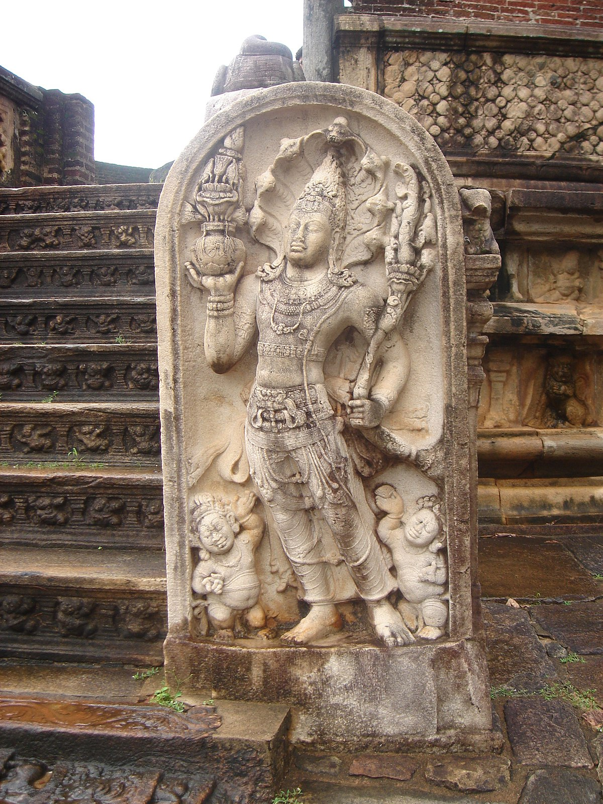

This heritage belongs to the Polonnaruwa Kingdom and it located in the Ancient City of Polonnaruwa.
It is belived that it holds Buddha's Relic of Tooth and the Arms Bowl of Buddha.
In comparison with Anuradhapura Kingdom, the Polonnaruwa Kingdom Architect Style is very similer.